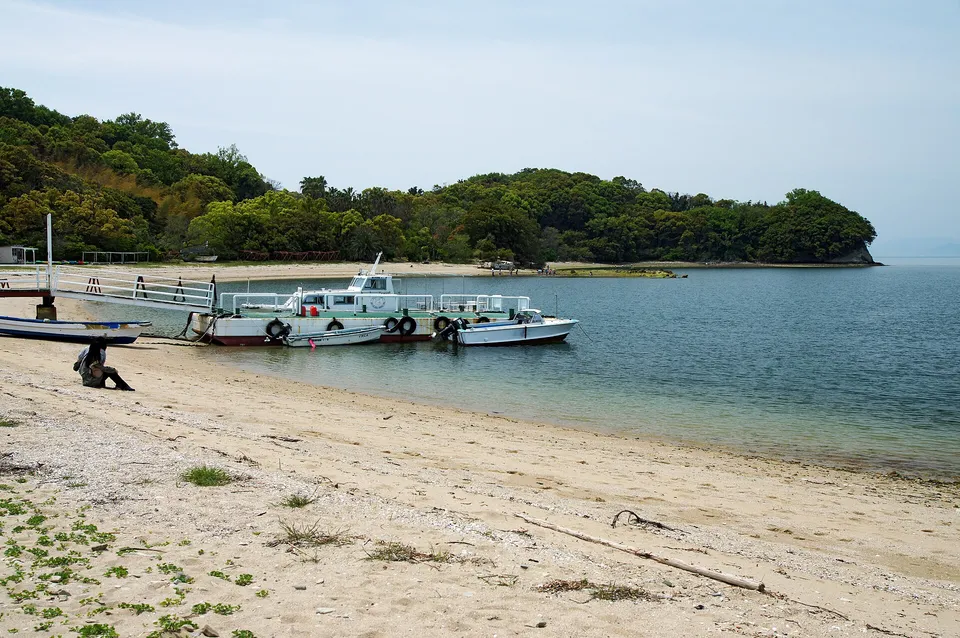
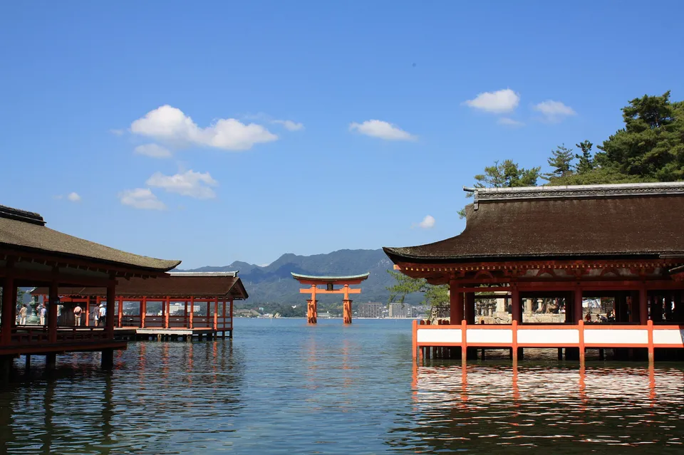
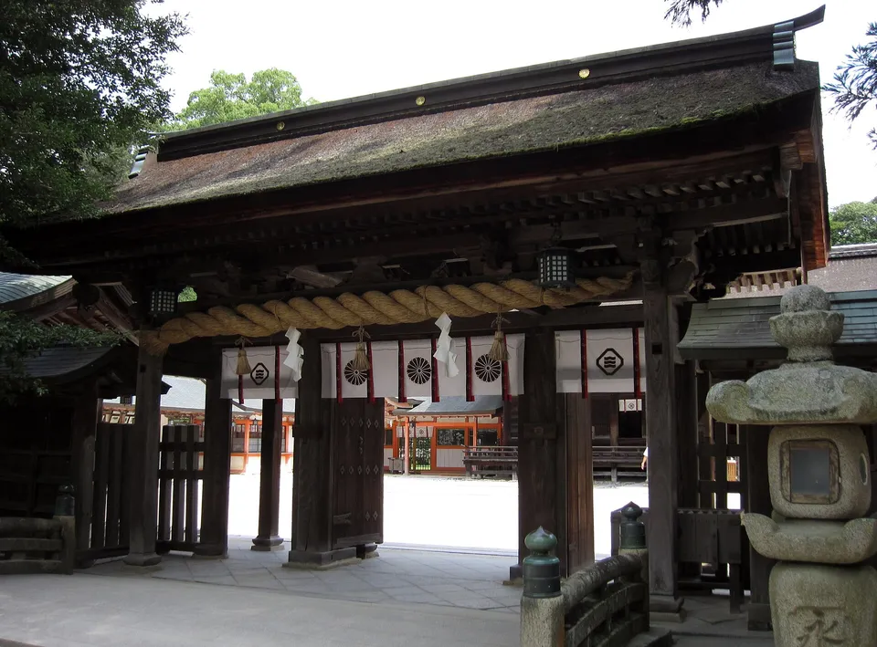

{kind=link}
The Inland Sea is where Japan keeps its islands close together: 110 inhabited ones between Kobe and Kyushu, most of them a short ferry from a city port, three of them reachable by bridge. This is all of them, with the population and area beside each name.
The famous few — Naoshima, Shōdoshima, Miyajima — are here, and so are the 51 islands with fewer than a hundred residents that share the same boats and get none of the visitors.



Photos: Islands of the Seto Inland Sea from the ferry deck — Maarten Heerlien from Voorschoten, The Netherlands via Wikimedia Commons, CC BY 2.0 · Angel Road sandbar, Shōdoshima — 663highland via Wikimedia Commons, CC BY 2.5 · Itsukushima Shrine and its great torii, Miyajima — Pistachio001 via Wikimedia Commons, CC BY-SA 3.0
.jpg){kind=link}
{kind=link}
{kind=link}
What counts as the Inland Sea here
The Seto Inland Sea — the sheltered water between Honshu, Shikoku and Kyushu — has more inhabited islands than any other stretch of Japan's coast: 110 in the SHIMADAS roster, across 8 prefectures, from Awaji with 134,717 people down to islets of 2. Three bridge systems cross it (Akashi–Naruto, Seto-Ōhashi, Shimanami), which means a handful of these islands you can drive or cycle to; the rest are boat-only, and the boats are short.
This is the Inland Sea slice of our table of every inhabited island in Japan. Same source — the SHIMADAS reference the Japan Islands Center publishes, never translated — same columns, one region.
The shape of it
Source: SHIMADAS (Japan Islands Center, 2019 edition), 2015 census and GSI figures.
The five to start on
The Inland Sea is the easiest place in Japan to island-hop, and the five below are the ones to learn it on: frequent boats, somewhere to eat, English on at least some signs. Then the table takes over.

Naoshima
The art island — Benesse, the Chichu museum, the pumpkin on the pier — and still a working town of 3,105. Ferries from Takamatsu and Uno all day.
{kind=link}
Shōdoshima
The big one: 27,927 people, olives, soy sauce, a gorge, and a sandbar you can walk at low tide. Buses on the island; boats from Takamatsu, Okayama and Kobe.
Miyajima (Itsukushima)
The floating torii and 1,674 residents behind the crowds. Ten minutes by ferry from Miyajimaguchi; stay overnight and the day-trippers vanish.

Ōmishima
On the Shimanami cycling route between Onomichi and Imabari; 5,675 people and the shrine that guards the whole sea, with the country's largest collection of samurai armour.
{kind=link}
Ogijima
148 people on a hill so steep there are no cars, forty minutes from Takamatsu, on the same boat as Megijima. What the small islands feel like.
The rest of them
105 more, most reached from Takamatsu, Okayama, Onomichi, Imabari, Hiroshima or Iwakuni by boats that also carry the post and the schoolchildren. Sort the table by people and start near the top.
The table: all 110
Every inhabited island of the Inland Sea in the SHIMADAS roster, by prefecture. Sort by people or size, or type a name. "Read more" links to the English Wikipedia article where we could verify one.
| Island | Prefecture | People ▾ | km² ▾ | Read more |
|---|---|---|---|---|
| Awaji Island淡路島 | Hyogo | 134,717 | 593 | Wikipedia |
| Ieshima家島 | Hyogo | 2,693 | 5.40 | |
| Bōzejima坊勢島 | Hyogo | 2,165 | 1.87 | |
| Nushima沼島 | Hyogo | 430 | 2.73 | |
| Tangashima男鹿島 | Hyogo | 38 | 4.53 | |
| Kitagishima北木島 | Okayama | 772 | 7.48 | |
| Nagashima長島 | Okayama | 486 | 3.52 | Wikipedia |
| Shiraishi Island白石島 | Okayama | 450 | 2.95 | Wikipedia |
| Kashirajima頭島 | Okayama | 319 | 0.60 | |
| Manabeshima真鍋島 | Okayama | 201 | 1.49 | Wikipedia |
| Maejima前島 | Okayama | 140 | 2.42 | |
| Ishima石島（井島） | Okayama | 76 | 0.82 | |
| Kashirajima大多府島 | Okayama | 71 | 0.40 | |
| Takashima高島 | Okayama | 70 | 1.05 | |
| Mushima六島 | Okayama | 70 | 1.02 | |
| Ōbishima大飛島 | Okayama | 45 | 0.96 | |
| Inujima犬島 | Okayama | 44 | 0.54 | Wikipedia |
| Kōjima鴻島 | Okayama | 39 | 2.07 | |
| Kakuijima鹿久居島 | Okayama | 9 | 10 | |
| Muguchijima六□島 | Okayama | 7 | 1.09 | |
| Matsushima松島 | Okayama | 3 | 0.08 | |
| Mukaishima向島 | Hiroshima | 22,311 | 22 | Wikipedia |
| Kurahashi-jima倉橋島 | Hiroshima | 16,776 | 70 | Wikipedia |
| Ikuchijima生口島 | Hiroshima | 8,902 | 31 | Wikipedia |
| Ōsakikamijima大崎上島 | Hiroshima | 7,915 | 38 | Wikipedia |
| Itsukushima厳島 | Hiroshima | 1,674 | 30 | Wikipedia |
| Shima田島 | Hiroshima | 1,480 | 8.62 | |
| Shimokamagarijima下蒲刈島 | Hiroshima | 1,463 | 7.96 | |
| Shima豊島 | Hiroshima | 1,179 | 5.64 | |
| Yokoshima横島 | Hiroshima | 1,063 | 4.06 | |
| Ninoshima似島 | Hiroshima | 790 | 3.84 | Wikipedia |
| Sagijima佐木島 | Hiroshima | 681 | 8.71 | |
| Iwashijima岩子島 | Hiroshima | 566 | 2.45 | |
| Kōneshima高根島 | Hiroshima | 481 | 5.60 | |
| Momoshima百島 | Hiroshima | 477 | 3.08 | |
| Hashirijima走島 | Hiroshima | 410 | 2.16 | |
| Shima鹿島 | Hiroshima | 258 | 2.62 | |
| Kanawajima金輪島 | Hiroshima | 81 | 1.05 | |
| Kohosojima小細島 | Hiroshima | 47 | 0.76 | |
| Chigirijima契島 | Hiroshima | 32 | 0.09 | |
| Nagashima長島 | Hiroshima | 28 | 1.04 | |
| Mikadoshima三角島 | Hiroshima | 23 | 0.78 | |
| Chigirijima生野島 | Hiroshima | 17 | 2.25 | |
| Ōkunoshima大久野島 | Hiroshima | 15 | 0.70 | Wikipedia |
| Okinoshima沖野島 | Hiroshima | 9 | 0.75 | |
| Sagishima小佐木島 | Hiroshima | 6 | 0.50 | |
| Yashirojima屋代島 | Yamaguchi | 16,766 | 128 | |
| Nagashima長島 | Yamaguchi | 1,489 | 14 | |
| Kasadoshima笠戸島 | Yamaguchi | 1,109 | 12 | |
| Iwai Island祝島 | Yamaguchi | 380 | 7.68 | Wikipedia |
| Heikunto平郡島 | Yamaguchi | 348 | 17 | |
| Sukumojima粭島 | Yamaguchi | 269 | 3.33 | |
| Ōzushima大津島 | Yamaguchi | 244 | 4.77 | Wikipedia |
| Hashira Island柱島 | Yamaguchi | 145 | 3.12 | Wikipedia |
| Okikamurojima沖家室島 | Yamaguchi | 137 | 0.95 | |
| Noshima野島 | Yamaguchi | 94 | 0.73 | |
| Nasakejima情島 | Yamaguchi | 62 | 1.00 | |
| Sshima牛島 | Yamaguchi | 46 | 1.90 | |
| Umashima馬島 | Yamaguchi | 26 | 0.70 | |
| Yashima八島 | Yamaguchi | 25 | 4.16 | |
| Hashima端島 | Yamaguchi | 21 | 0.67 | Wikipedia |
| Tsujima佐合島 | Yamaguchi | 17 | 1.32 | |
| Jima前島 | Yamaguchi | 7 | 1.09 | |
| Shōdoshima小豆島 | Kagawa | 27,927 | 153 | Wikipedia |
| Naoshima直島 | Kagawa | 3,105 | 7.82 | Wikipedia |
| Teshima豊島 | Kagawa | 867 | 15 | Wikipedia |
| Ibuki island伊吹島 | Kagawa | 400 | 1.01 | Wikipedia |
| Honjima本島 | Kagawa | 396 | 6.75 | |
| Awashima Island粟島 | Kagawa | 216 | 3.67 | Wikipedia |
| Ogijima男木島 | Kagawa | 148 | 1.34 | Wikipedia |
| Megijima女木島 | Kagawa | 136 | 2.62 | Wikipedia |
| Yoshima与島 | Kagawa | 81 | 1.10 | |
| Ōshima大島 | Kagawa | 75 | 0.73 | Wikipedia |
| Iwakurojima岩黒島 | Kagawa | 75 | 0.17 | |
| Sanagishima佐柳島 | Kagawa | 72 | 1.83 | |
| Okinoshima沖之島 | Kagawa | 60 | 0.18 | |
| Oteshima小手島 | Kagawa | 36 | 0.53 | |
| Teshima手島 | Kagawa | 30 | 3.41 | Wikipedia |
| Takamishima高見島 | Kagawa | 27 | 2.33 | |
| Shishijima志々島 | Kagawa | 18 | 0.74 | Wikipedia |
| Mukasujima向島 | Kagawa | 15 | 0.74 | |
| Odeshima小豊島 | Kagawa | 10 | 1.10 | |
| Sshijima牛島 | Kagawa | 10 | 0.84 | |
| Koyoshima小与島 | Kagawa | 2 | 0.26 | |
| Ōmishima Island大三島 | Ehime | 5,675 | 65 | Wikipedia |
| Nakajima中島 | Ehime | 2,781 | 21 | |
| Nii Ōshima大島 | Ehime | 2,504 | 42 | Wikipedia |
| Iwagijima岩城島 | Ehime | 2,033 | 8.95 | |
| Ikinajima生名島 | Ehime | 1,582 | 3.67 | |
| Aijima興居島 | Ehime | 1,118 | 8.40 | |
| Sashima佐島 | Ehime | 489 | 2.68 | |
| Nuwajima怒和島 | Ehime | 354 | 4.75 | |
| Okamura Island岡村島 | Ehime | 311 | 3.17 | Wikipedia |
| Tsuwajijima津和地島 | Ehime | 291 | 2.85 | |
| Muzukijima睦月島 | Ehime | 222 | 3.81 | |
| Uoshima魚島 | Ehime | 168 | 1.36 | Wikipedia |
| Futagamijima二神島 | Ehime | 127 | 2.13 | |
| Nogutsunajima野忽那島 | Ehime | 106 | 0.92 | |
| Ōkeshima大下島 | Ehime | 69 | 1.75 | |
| Tsurushima釣島 | Ehime | 37 | 0.36 | Wikipedia |
| Takaikamishima高井神島 | Ehime | 26 | 1.34 | Wikipedia |
| Shima鵜島 | Ehime | 23 | 0.76 | |
| Umashima馬島 | Ehime | 20 | 0.50 | |
| Aijima安居島 | Ehime | 20 | 0.26 | |
| Kurushima来島 | Ehime | 15 | 0.04 | Wikipedia |
| Tsushima津島 | Ehime | 13 | 1.49 | Wikipedia |
| Oshima小島 | Ehime | 11 | 0.50 | Wikipedia |
| Kurushima比岐島 | Ehime | 3 | 0.30 | Wikipedia |
| Shimadajima島田島 | Tokushima | 430 | 5.72 | |
| Himeshima姫島 | Oita | 1,991 | 6.99 |
110 islands. Population and area are the figures printed in SHIMADAS (2019 edition; 2015 census and GSI). Islands of these prefectures that face the Sea of Japan, the Pacific or the Bungo Channel are left out.
Ports, boats and bikes
- Ports that matter: Takamatsu (Naoshima, Shōdoshima, Megijima/Ogijima, Teshima), Uno in Okayama (Naoshima, Teshima), Onomichi and Imabari (the Shimanami islands, by bike or boat), Hiroshima and Miyajimaguchi (Miyajima, Ninoshima), Yanai and Iwakuni (the Yamaguchi islands), Kobe (Shōdoshima by jet-foil).
- Timetables are on the operator's site in Japanese; search the island's name plus 時刻表. Small islands get four to eight sailings a day, the last often before 18:00.
- Bikes: the Shimanami Kaidō (Onomichi–Imabari, about 70 km) is the one route where you can hop islands without a boat at all; rental stations at both ends and on the islands.
- Art festival years (Setouchi Triennale, next in 2028) triple the boats and the crowds on the Kagawa islands; every other year they are ordinary places again.
- Sleeping: Shōdoshima, Naoshima and Miyajima have hotels; almost everything else is a minshuku or nothing — book ahead and confirm dinner.
The Japanese you'll actually use
Common questions
How many islands are in the Seto Inland Sea?
Roughly 700 islands in total; 110 of them are inhabited according to the SHIMADAS roster used here, 51 with fewer than a hundred residents.
Which Seto Inland Sea island should I visit first?
Naoshima if you want art and English signage; Shōdoshima if you want a real island with buses, food and beaches; Miyajima if you are already in Hiroshima. Ōmishima and the Shimanami route if you cycle. Ogijima or Megijima for a first taste of a small island, forty minutes from Takamatsu.
Can you visit the Seto Inland Sea islands without a car?
Yes — better without one. Ferries leave from city ports (Takamatsu, Uno, Onomichi, Imabari, Hiroshima) and most islands are walkable or have a bus or bike rental. The Shimanami Kaidō lets you cycle island to island over the bridges.
When is the Setouchi Triennale?
Every three years, in spring, summer and autumn sessions on the Kagawa islands; the next edition after 2025 is 2028. Outside festival years the same islands are quiet and the boats far fewer.
Are the population figures current?
They are the 2015 census figures as printed in the 2019 edition of SHIMADAS. Every small island here has fewer people now; treat the numbers as upper bounds.
Read next
Sources: SHIMADAS (Japan Islands Center, 2019 edition) for the roster and figures (2015 census, GSI); only published figures are reproduced, no text. English article links verified against the English Wikipedia by prefecture; a blank means unverified, not absent. Photos are Creative Commons — credits under each image.